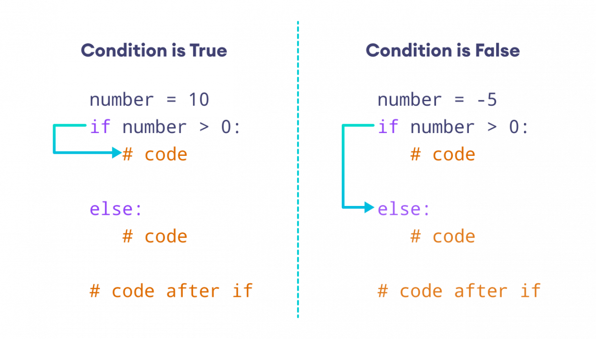
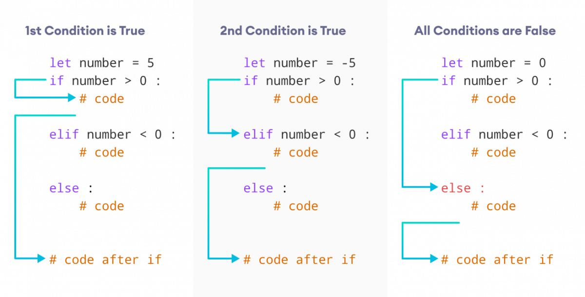
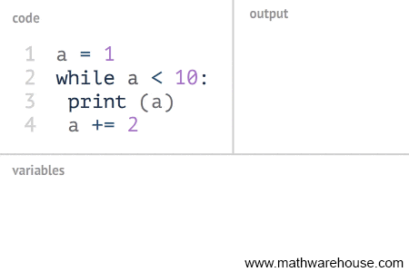
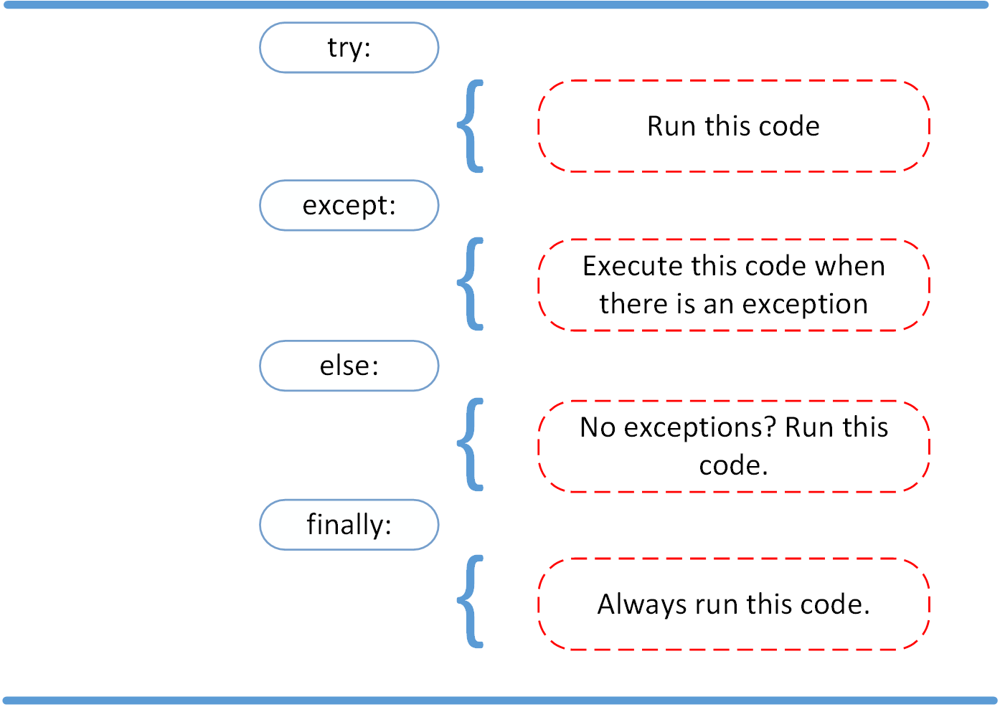

Estructuras de control
Las estructuras de control permiten dirigir el flujo de ejecución de un programa. Son fundamentales para crear programas que puedan tomar decisiones y repetir acciones.

Existen tres tipos principales de estructuras de control:
- Selección: if, if-else, if-elif-else
- Iteración: while, for
- Secuencial: flujo normal de ejecución
Condicional simple if
La estructura if permite ejecutar un bloque de código cuando una condición
booleana es verdadera.
numero = int(input("Introduce un número: "))
if numero % 2 == 0:
print("Has introducido un número par")Condicional if-else
La estructura if-else permite ejecutar un bloque u otro según se cumpla
o no la condición.

numero = int(input("Introduce un número: "))
if numero % 2 == 0:
print("Has introducido un número par")
else:
print("Has introducido un número impar")Condicional if-elif-else
La estructura if-elif-else permite evaluar múltiples condiciones de forma secuencial.

numero = int(input("Introduce un número: "))
if numero > 0:
print("Número positivo")
elif numero < 0:
print("Número negativo")
else:
print("Número cero")Estructuras de repetición
Los bucles permiten repetir un bloque de código varias veces.
while: número de iteraciones desconocido.for: recorrido de secuencias.

for i in range(5):
print(i)Control de errores
La estructura try-except permite capturar errores y evitar que el programa
finalice de forma abrupta.

try:
x = int(input("Número: "))
except ValueError:
print("No es un entero válido")